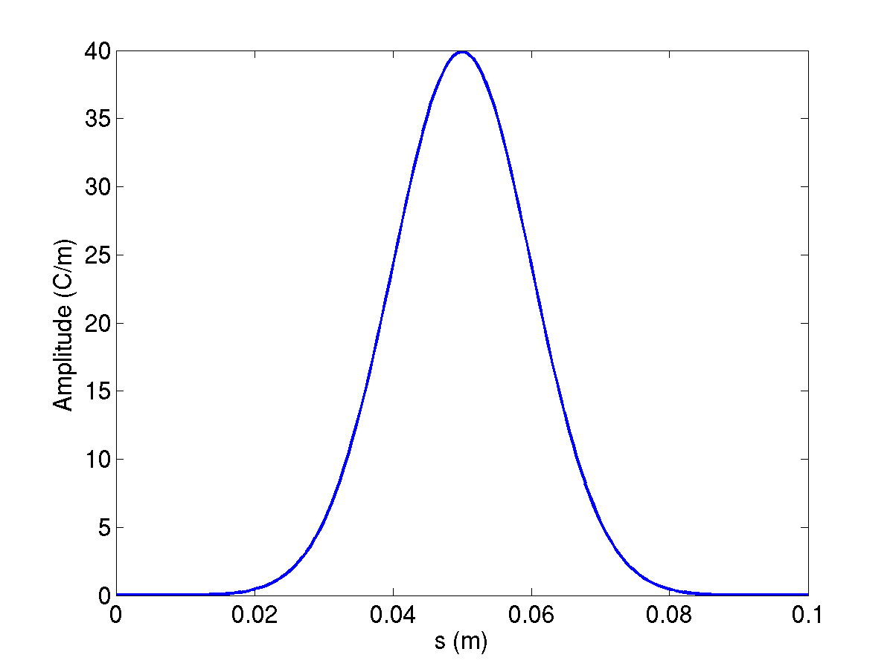

T3P¶
T3P solves Maxwell's equations in the time domain on the same high-order finite-element mesh as the frequency-domain solvers. Its main uses are wakefield computation for beamline components, transient response of cavities and couplers to driven ports, and pulse propagation through long structures. The source executable is named t3p; in the ACE3P source tree the module lives under tfe3p.
What it solves¶
Ampère's and Faraday's laws are combined into a second-order wave equation for the electric field, discretized in space with Nédélec elements and in time with an implicit Newmark-beta scheme. The implicit scheme is unconditionally stable, so the time step is chosen for accuracy rather than for stability, and each step requires one linear solve of the system matrix. The matrix does not change between steps, so a direct factorization done once is reused throughout the run.
flowchart LR
A["Cubit + acdtool<br/>mesh.ncdf"] --> B["T3P<br/>time stepping<br/>Ax = b each step"]
S["Source:<br/>beam, port pulse,<br/>dipole"] --> B
B --> C["Monitors:<br/>WakeField, Volume,<br/>Point, Power, ModeVoltage"]
C --> D["wakefield.out<br/>field snapshots<br/>time signals"]
D --> E["ParaView macros<br/>acdtool postprocess<br/>wakeplot, timeFFT"]Validation against Omega3P: a dipole-excited cavity gives the same resonant frequency in both codes to four digits, 11.024 GHz at order 1 and 11.037 GHz at order 2.
Sources and boundaries¶
| Excitation | Block | Use |
|---|---|---|
| Beam | LoadingInfo with a Bunch |
A rigid Gaussian bunch moving at c along a line. Several LoadingInfo blocks give multi-beam excitation, for dipole wakes. |
| Port pulse | Loading with Type: PortModeLoading and an Excitation |
A modulated Gaussian pulse of a waveguide mode launched from a port surface, for transients and pulse propagation. |
| Dipole | DipoleLoading |
A point dipole for mode identification by spectral analysis. Not covered by the tutorials. |
| Eigenmode | A field from Omega3P or a user-defined field loaded onto a boundary. Not covered by the tutorials. |
Boundary conditions are the usual Electric, Magnetic, Exterior with SurfaceMaterial, Absorbing, and Waveguide, plus:
Impedancewith aSurfaceMaterialblock, for a conductor with a frequency-dependent surface impedance. The optionalCoatingsub-block adds a thin lossy dielectric layer on top of the conductor without meshing it. See Tutorial 5.- PML for free-space termination, through
PRegion. Not covered by the tutorials.
Lossy dielectric volumes are frequency-independent and declared with Material blocks as in the other solvers.
Beam excitation and wakefields¶

A bunch of RMS length \(\sigma\) has a spectrum that falls as \(\exp(-\omega^2\sigma^2/2c^2)\); the frequency at which it has dropped by one e-folding is \(f_1 = c/(2\pi\sigma)\), about 4.8 GHz for \(\sigma\) = 1 cm. The time step must resolve the highest frequency you care about, and the mesh must resolve the corresponding wavelength. A rule of thumb from the examples is element size of about \(\sigma/3\) near the beam path and DT of \(\sigma/(10c)\) or finer.
The longitudinal wakefield is computed by indirect integration along the beam path: the field is integrated along the cavity gap on the axis, and a Laplace solve extends the result to the beam-pipe cross section. This works for structures where only vacuum is visible from the upstream pipe to the downstream pipe. The transverse wakefield follows from the Panofsky-Wenzel theorem, which relates the transverse kick to the transverse gradient of the longitudinal wake, evaluated with acdtool postprocess transwake at two transverse offsets.
T3P reports wakes per unit charge in V/pC and, in the header of wakefield.out, the loss factor for longitudinal wakes or the kick factor for transverse ones. The ParaView wakeplot macro Fourier-transforms the wake to give the impedance spectrum in ohms.
Input file¶
Every block and key is described in the T3P command syntax.
ModelInfo: {
File: ./pillboxwg.ncdf
BoundaryCondition: {
Exterior: 6 5
Absorbing: 3 4 // beam pipe ends
Magnetic: 1 2 // symmetry planes
}
}
FiniteElement: {
Order: 2
CurvedSurfaces: on
}
LoadingInfo: {
Bunch: {
Type: Gaussian
Sigma: 0.01 // m
Number of sigmas: 5 // truncate the bunch at +-5 sigma
Charge: 1.e-12 // C
}
SymmetryFactor: 4 // quarter model
StartPoint: 0.0, 0.0, -0.075
Direction: 0.0, 0.0, 1.0
BoundaryID: 3 // bunch enters through this surface
}
TimeStepping: {
MaximumTime: 5e-9
DT: 2e-12
}
Monitor: {
Type: Volume
Name: mymon
TimeStart: 0e-9
TimeEnd: 5e-9
TimeStep: 0.2e-9
}
Monitor: {
Type: WakeField
Name: wakefield
StartContour: -0.075
EndContour: 0.075
Smax: 1.4 // m, length of wake to record
}
LinearSolver: {
Solver: MUMPS
}
LoadingInfo and Bunch¶
| Key | Meaning |
|---|---|
Bunch.Type |
Gaussian |
Bunch.Sigma |
RMS bunch length in m |
Bunch.Number of sigmas or Nsigmas |
Where to truncate the Gaussian. Either spelling is accepted. |
Bunch.Charge |
Bunch charge in C. Negative charge is allowed and is used for dipole excitation. |
SymmetryFactor |
Fraction of the full structure modeled, as a divisor: 4 for a quarter model. T3P scales the effective charge in the domain by this factor and reports the wake for the full charge. |
StartPoint, Direction |
Beam line. The bunch starts centered at StartPoint minus Nsigmas times Sigma and travels at c along Direction. |
BoundaryID |
Surface through which the beam enters. Must be an Absorbing or Waveguide surface. |
Repeating LoadingInfo launches several bunches simultaneously. Two bunches of opposite charge at opposite transverse offsets excite a pure dipole wake.
TimeStepping and CheckPoint¶
| Key | Meaning |
|---|---|
MaximumTime |
End of the run in s |
DT |
Time step in s |
CheckPoint.Action |
none, or restart to continue from a checkpoint |
CheckPoint.Ntimesteps |
Checkpoint interval in steps. Checkpoints go to t3p_results/CHECKPOINT/. |
Monitors¶
Each Monitor block writes a file named after Name in t3p_results/OUTPUT/.
Type |
Keys | Output |
|---|---|---|
WakeField |
StartContour, EndContour (z range of the integration contour), Smax (wake length) |
wakefield.out: s, W(s), bunch current. Header carries the loss or kick factor. |
Volume |
TimeStart, TimeEnd, TimeStep |
One <name>ts_t<time>ps.out.mod field snapshot per sampled time, for ParaView animation |
Point |
Coordinate |
<name>.out: time, Ex Ey Ez, Bx By Bz at the point |
Line |
start, end, point count | Field along a line versus time |
Power |
ReferenceNumber |
<name>.out: time, Poynting flux through the surface |
SurfacePowerLoss |
ReferenceNumber |
Ohmic loss on an Exterior or Impedance surface versus time |
ModeVoltage |
Port sub-block with ReferenceNumber and an ESolver for the port modes |
<name>.out: time, modal amplitude at the port |
For the coaxial-signal post-processor, the Power monitor on the port must be named port and the ModeVoltage monitor modecoeff. See Tutorial 3.
LinearSolver¶
MUMPS is the sparse direct solver and is the right choice up to a few hundred thousand DOFs: the factorization is done once and each time step is a fast back-substitution. For larger problems where the factors do not fit in memory, use CG, an iterative solver whose cost per step is higher but whose memory is bounded. If the Solver key is absent or misspelled, the code picks the best direct solver compiled in, MUMPS on the SLAC and NERSC builds, so a missing block silently gives you MUMPS.
PRegion: moving window¶
For a short bunch in a long structure, most of the mesh is empty of field at any one time. A moving window solves at full order only in a region that travels with the bunch and at order 0 elsewhere:
FiniteElement: {
Order: 0 // outside the window
CurvedSurfaces: on
}
PRegion: {
Type: AutomaticMovingWindow
Order: 2 // inside the window
Back: 0.005 // m behind the bunch
Front: 0.05 // m ahead of the bunch
StructureEnd: 0.175 // z where the window stops moving
}
The wake is valid only for distances behind the bunch up to about Back; set it to the wake length you need. The same mechanism follows a port-launched pulse when Object: Pulse, StartPoint, Direction, and ExcitationPort are given. See Tutorial 4.
Running¶
Results go to t3p_results/. The DOF count is printed near the top of t3p.log; the quarter pillbox has 47,000 DOFs at order 2 and runs its 2,500 steps in a few minutes on 16 ranks. Rank count should grow with DOFs; the BPM example with 69,000 elements uses 128 ranks.
Output¶
| Location | Content |
|---|---|
t3p.log, t3p.warn |
Log and warnings. The log names the time-stepping scheme and reports elements and DOFs. |
OUTPUT/wakefield.out |
Wake and bunch current versus s, with loss or kick factor in the header |
OUTPUT/<volume>ts_t<time>ps.out.mod |
Field snapshots. Load the series through the SLAC toolbar with the mesh and press Play. |
OUTPUT/<point>.out, <power>.out, <modecoeff>.out |
Time series from Point, Power, ModeVoltage monitors |
OUTPUT/Bunch<n>.out |
The bunch current profile used, time versus amperes |
OUTPUT/BBL<n>/ |
Internal beam-loading data per bunch |
OUTPUT/signal.out |
Written by acdtool postprocess coaxsignal: time, voltage, beam current |
CHECKPOINT/ |
Restart files |
monitorlist.fieldnode |
Bookkeeping for volume monitors |
Post-processing¶
Field animation. In ParaView, click the SLAC toolbar reader, pick the mesh and the first *.out.mod snapshot; the reader detects the series. Press Play.
Wake and impedance. Edit the file path at the top of wakeplot.py, then click the wakeplot macro button. It plots W(s) with the bunch profile and the impedance spectrum from the Fourier transform. The spectrum is only meaningful up to the bunch's frequency content; the dashed line in the impedance plot is the bunch spectrum for reference.
Transverse wake. acdtool postprocess transwake t3p_results x1 y1 x2 y2 rewrites wakefield.out as a transverse wake from the longitudinal wakes at two transverse points, with the kick factor in the header.
Coaxial signal. acdtool postprocess coaxsignal t3p_results converts port.out and modecoeff.out into the voltage on a 50 ohm coaxial line, written to signal.out. The timeFFT macro plots it and its spectrum normalized to the bunch spectrum, which is the BPM transfer impedance.
Power. Power monitors write plain two-column files; a six-line matplotlib script in the SIBC example plots input against output power.
acdtool.log is overwritten
Every acdtool invocation writes acdtool.log in the working directory. Running meshconvert and then postprocess transwake in the same directory overwrites the mesh statistics. Copy the log aside if you need it.
Tutorials¶
- Longitudinal wake of a pillbox: quarter model, beam excitation, loss factor, impedance spectrum, and the effect of a waveguide boundary.
- Transverse wake: offset beam, Panofsky-Wenzel via acdtool, two-beam dipole excitation, and the equivalent half model with mixed symmetry.
- Beam position monitor: ceramic feedthrough, coaxial signal extraction, transfer impedance.
- Taper with a moving window: short-range wake, order-0 background with a traveling order-2 window.
- Surface impedance with a thin lossy coating: port pulse through a coax with a coated inner conductor, power monitors.